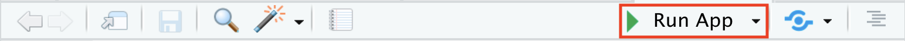

이 문서에서는 API로 구한 데이터를 이용하여 Shiny Application 으로 시각화를 구현하는 예제를 만들어보겠습니다.
1단계 RStudio에서 Shiny Application 내장된 예제 프로젝트 로딩하기
RStudio File 메뉴에서 New Project > New Directory > Shiny Application을 차례로 선택하고 프로젝트 디렉토리를 C:/Projects 하부에 아래의 예시와 같이 만듭니다.
git repository와 renv도 선택하여 진행하시는 것을 추천 드립니다.
프로젝트 폴더에 app.R 파일이 생성되어 있으며 이를 열어보면 아래의 예제코드가 보입니다.
app.R
# This is a Shiny web application. You can run the application by clicking# the 'Run App' button above.## Find out more about building applications with Shiny here:## https://shiny.posit.co/#library(shiny)# Define UI for application that draws a histogramui <-fluidPage(# Application titletitlePanel("Old Faithful Geyser Data"),# Sidebar with a slider input for number of bins sidebarLayout(sidebarPanel(sliderInput("bins","Number of bins:",min =1,max =50,value =30) ),# Show a plot of the generated distributionmainPanel(plotOutput("distPlot") ) ))# Define server logic required to draw a histogramserver <-function(input, output) { output$distPlot <-renderPlot({# generate bins based on input$bins from ui.R x <- faithful[, 2] bins <-seq(min(x), max(x), length.out = input$bins +1)# draw the histogram with the specified number of binshist(x, breaks = bins, col ='darkgray', border ='white',xlab ='Waiting time to next eruption (in mins)',main ='Histogram of waiting times') })}# Run the application shinyApp(ui = ui, server = server)
이 코드는 기본적인 Shiny Application 예제 코드입니다. 그림 1 에서 보이는 Run App 버튼을 틀릭하여 코드를 실행시켜보면 Output/Viewer pane에서 자신의 로컬컴퓨터 상에서 웹 어플리케이션이 실행되는 것을 확인할 수 있습니다.

그림 1: The Run App button can be found at the top-right of the source pane.
실행된 application의 왼쪽 사이드에 있는 Number of bins을 욺직이면 우측 히스토그램에서 x축 간격이 달라짐을 보실 수 있습니다.
Creat Shiny Application message box
R-4.4.1-Shiny_Application_Example
2단계: Shiny Application의 핵심 구조 이해하기
2단계 예시
1단계에서 로딩한 내장된 예제코드를 아래와 같이 핵심구조만 남기고 삭제하여 매우 단순화 시키고 일부는 대체를 하여 shiny Application의 핵심구조에 대해 설명하겠습니다.
app.R
library(shiny)# Define UI for applicationui <-fluidPage(textInput("user_input", "문자열을 입력하세요:", ""), # User input fieldtextOutput("output_text") # Dynamic text output)# Define server logic server <-function(input, output) {# Render the concatenated text output$output_text <-renderText({paste("사용자가 아래의 문자열을 입력하셨습니다:", input$user_input) # Concatenate using paste() })}# Run the application shinyApp(ui = ui, server = server)
단순화된 app.R은 3가지 주요 부분으로 구성되어 있습니다. 사용자 인터페이스 (UI) 정의:
첫 번째 부분은 사용자 인터페이스(UI)로, 화면에서 어떤 입력을 받고, 어떤 출력을 할지 정의합니다. 여기서는 ui <- fluidPage()로 구현되어 있습니다.
fluidPage()는 반응형 레이아웃을 지원하는 화면 구성 함수로, 다양한 디바이스(데스크탑, 태블릿, 모바일)에서 화면 크기에 맞춰 UI가 자동으로 조정됩니다. 이 함수 내부에는 입력과 출력을 처리하는 함수들이 포함됩니다.
입력 함수: textInput(“user_input”, “문자열을 입력하세요:”, ““)는 텍스트 입력을 받는 함수입니다.
첫 번째 인자인 “user_input”은 입력된 값을 저장할 변수명입니다.
두 번째 인자인 “문자열을 입력하세요:”는 입력 필드의 라벨로, 사용자가 텍스트를 입력할 때 보이는 안내 문구입니다.
세 번째 인자인 ““는 기본값으로, 입력 필드가 처음에 비어 있음을 의미합니다.
출력 함수: textOutput(“output_text”)는 출력 결과를 화면에 표시하는 함수입니다.
첫 번째 인자인 “output_text”는 출력할 값을 저장된 변수명입니다.
두 번째 부분은 서버(server) 함수로, 사용자 인터페이스에서 입력된 값을 어떻게 처리하고 출력할지를 정의합니다.
서버 함수는 server <- function(input, output) {}로 구성됩니다. 여기서:
input은 사용자가 입력한 값들이 저장된 참조형 반응형 리스트 객체입니다.
output은 변환된 출력값이 저장될 참조형 반응형 리스트 객체입니다.
서버 함수 내부에서는 renderText() 함수를 사용해 텍스트를 처리하고, 그 내부에서 paste() 함수를 사용하여 입력된 텍스트를 출력할 텍스트와 결합합니다.
paste() 함수는 input$user_input을 참조하여, UI에서 입력된 값을 가져옵니다. 이 값은 반응형 객체인 input을 통해 실시간으로 서버에 전달됩니다.
output$output_text에 직접 paste() 함수의 결과를 넣는 대신, renderText() 함수를 사용한 후 결과를 참조하게 됩니다. 이는 renderText()가 반응형으로 동작하여, 사용자가 입력할 때마다 출력값을 실시간으로 갱신해주기 때문입니다.
마지막 부분은 Shiny 애플리케이션을 실행하는 shinyApp(ui = ui, server = server)입니다. 이 함수는 정의된 UI와 서버 로직을 결합하여 애플리케이션을 실행시킵니다.
이제 그림 1 에서 보이는 Run App 버튼을 틀릭하여 코드를 실행시켜보면 Output/Viewer pane에서 자신의 로컬컴퓨터 상에서 웹 어플리케이션이 실행되는 것을 확인할 수 있습니다.
입력을 하는 textInput 필드에 “Hello, Shiny!”를 입력하면 아래의 출력창에 “사용자가 아래의 문자열을 입력하셨습니다: Hello, Shiny!”가 출력됩니다. 그리고 새로운 문자를 다시 입력해 보시면 새로운 문자가 보임을 알 수 있습니다.
이로써 핵심기능에 대한 설명을 마칩니다.
3단계: API 다운로드 데이터 Shiny Application을 통한 시각화 예제
3단계 예시
3단계에서 API 데이터를 shiny Application으로 그래프를 그려주는 예제입니다. 아래의 코드를 app.R 파일에 복사하여 붙여넣기 하시면 됩니다.
app.R
################################################################################## API data download################################################################################library(rjson)library(httr)# API 호출 정보 설정base_url <-"http://apis.data.go.kr/B551172/getDiagnosisRemoteCancerous"call_url <-"AllCancerRemoteOccurrenceTrend"method <-"GET"My_API_Key <-"wqdX2OnQY29zYQ7BXsGafDqVNaIbIYUoqAqS1bOeK6/yyqdukiVcRcj25wue+U8tqSaSXThVPwfaWDNpUc6cwQ=="# 요청 파라미터 설정params <-list(serviceKey = My_API_Key, # 실제 API 키로 변경pageNo =1,numOfRows =10,resultType ="json")# API 호출url <-paste0(base_url, "/", call_url)response <-GET(url, query = params)# 응답 상태 확인# if (http_status(response) == 200)if (status_code(response) ==200) {# JSON 데이터 파싱print(response)str(response)} else {print(paste("API 호출 실패:", status_code(response)))}json_text <-content(response, as ="text")print(json_text)print("------------------")data <-fromJSON(json_text)print(data)# 예시: 리스트 내부에 있는 항목을 추출하여 데이터프레임으로 변환data_list <- data$items # 적절한 필드로 접근# 데이터프레임으로 변환df <-as.data.frame(do.call(rbind, lapply(data_list, as.data.frame)))################################################################################## ShinyApp################################################################################library(shiny)library(ggplot2)# Define UI for the applicationui <-fluidPage(# Application titletitlePanel("API Data Vizualization with ShinyApp"),# Sidebar layoutsidebarLayout(sidebarPanel(# Dropdown to select Y axis variableselectInput("y_var", "Choose Y-axis Variable:", choices =c("TOTAL", "VALUE"),selected ="TOTAL") # Default to TOTAL ),# Main panel to display the plotmainPanel(plotOutput("yearPlot") ) ))# Define server logic to create the plot based on user selectionserver <-function(input, output) {# Render the plot output$yearPlot <-renderPlot({# Plot using the selected Y variableggplot(data = df, aes(x = YEAR, y = .data[[input$y_var]])) +geom_point() +labs(x ="Year", y = input$y_var) })}# Run the application shinyApp(ui = ui, server = server)
위 코드는 크게 API 데이터 다운로드 부분과 ShinyApp 부분으로 나누어져 있으며 각 부분은 주석으로 구역을 구분해 두었습니다.
API를 통해 데이터를 다운로드 하는 부분은 설명을 생략하겠습니다.
ui에서 달라진 점은 fluidPage 함수 내부에 titlePanel 함수와 sidebarLayout 함수가 있으며, sidebarPanel과 mainPanel로 구성되어 있습니다.